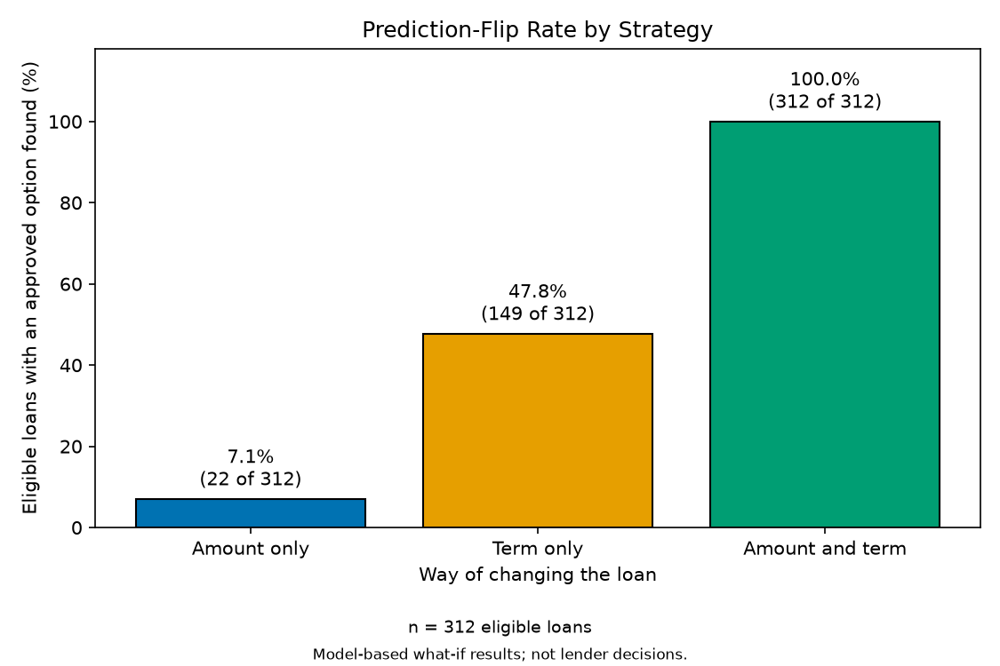
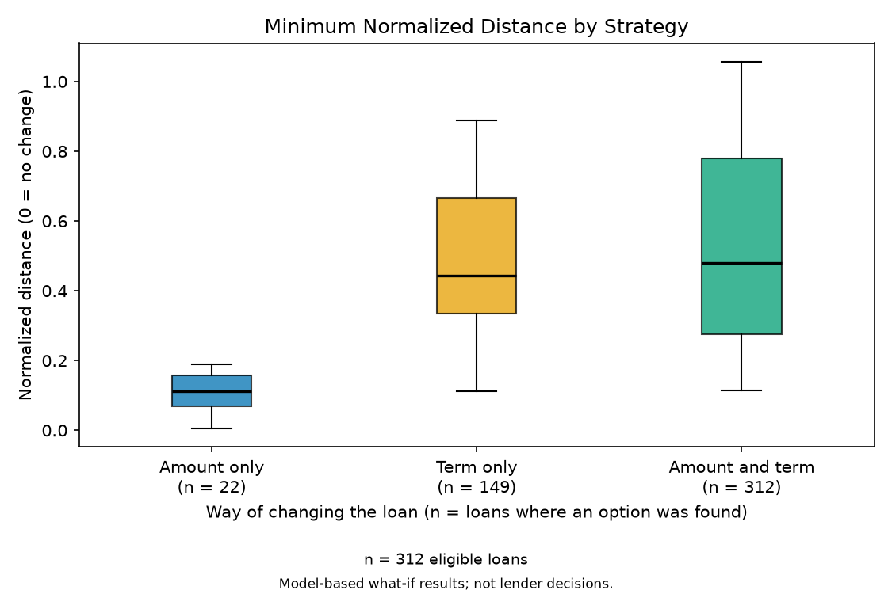
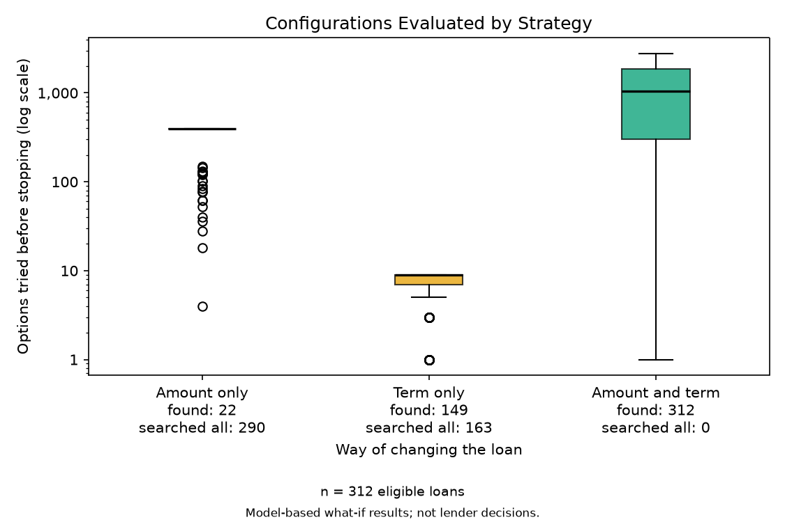
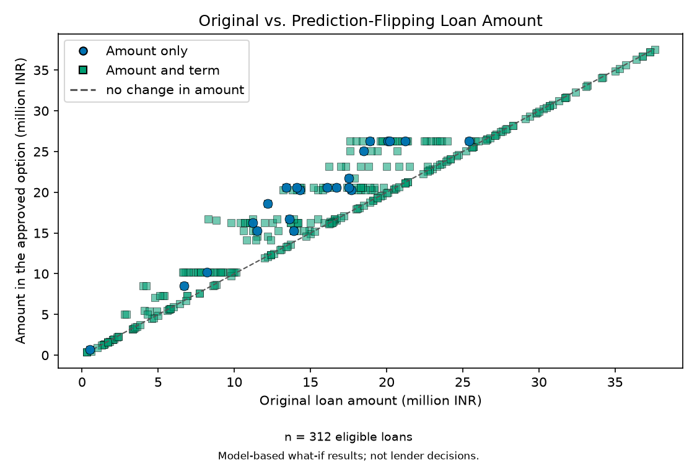

What it does, how to run it, how to read the results, how steady and reliable they are, and how the code is organized.
MODESIM course project (SF241)
October 2026
Amounts in this document are in Indian Rupees (INR).
Sharko is a small program you run in the terminal. It answers one question about a loan application:
To answer it, Sharko learns from a public dataset of 4,269 past loan decisions (the Loan Approval Prediction Dataset from Kaggle, in an Indian lending setting). From those decisions it builds a model: a formula that gives any application a chance of approval from 0% to 100%. A chance of 50% or more counts as approved. All amounts are in Indian Rupees (INR).
Here is a real run of the built-in example application:
| Education | Graduate | Annual income | 4,100,000 INR |
| Self-employed | No | CIBIL credit score | 417 |
| Dependents | 2 | Loan amount asked for | 12,200,000 INR |
| Assets (home, business, luxury, bank) | 2,700,000 / 2,200,000 / 8,800,000 / 3,300,000 | Loan term asked for | 8 years |
| What Sharko tried | Result |
|---|---|
| The application as submitted | 0.3% chance of approval. Not approved. |
| Change the loan amount only | Nothing found. Sharko tried all 392 other amounts. |
| Change the loan term only | Nothing found. Sharko tried all 9 other terms. |
| Change both amount and term | Found. 14,600,000 INR over 4 years gives a 54.1% chance (approved). |
Sharko works in four steps. Steps 1 and 2 always happen. Steps 3 and 4 happen only when the first answer is "not approved".
1. Learn. The train command shows the model the past loans. Sharko tries three kinds of model (logistic regression, random forest, gradient boosting), tests each with a repeated practice test, and keeps the best one. In this project the winner is gradient boosting. You do this once.
2. Check. You answer 11 short questions about one application. The model returns a chance of approval. At 50% or more the answer is approved, the search is skipped, and you get a report showing how safe the approval is.
3. Search. If the chance is below 50%, Sharko tries other loan amounts and terms, nearest to your request first. It scores each option with the same model and stops at the first one that reaches 50%.
4. Compare. Sharko runs the search three ways and shows them side by side. The way with the smallest change is marked as the closest.
| Never changes during a search (fixed) | Can change during a search |
|---|---|
| Education, self-employed, number of dependents, annual income, CIBIL score, and the four asset values (residential, commercial, luxury, bank) | Loan amount and loan term only |
| Way | What changes | How many options it can try (real data) |
|---|---|---|
| Amount only | The loan amount. The term stays as submitted. | 392: every amount from 300,000 to 39,500,000 in steps of 100,000, except yours |
| Term only | The loan term. The amount stays as submitted. | 9: the terms 2, 4, 6 ... 20 years, except yours |
| Amount and term | Both. Each option must differ from yours in both. | Up to 3,528 (392 amounts x 9 terms) |
Every option gets a distance from your request. A distance of 0 means no change; bigger means a bigger change. Sharko tries options from the smallest distance up, so the first approved option is also the smallest change.
Worked example, from the run in section 1 (old: 12,200,000 over 8 years, new: 14,600,000 over 4 years):
| Part | Calculation | Result |
|---|---|---|
| Amount part | 2,400,000 / (39,500,000 - 300,000) = 2,400,000 / 39,200,000 | 0.0612 |
| Term part | 4 years / (20 - 2) = 4 / 18 | 0.2222 |
| Distance | 0.0612 + 0.2222 | 0.2834 |
Run every command from the Sharko project folder. You need Python 3.10 or newer.
python -m pip install -r requirements.txt
This installs scikit-learn, pandas, numpy, matplotlib, joblib and pytest.
python -m sharko
With no command, Sharko prints this short guide instead of an error:
========================================================================
SHARKO - loan what-if tool
========================================================================
Sharko predicts whether a loan application would be approved. If it
would be rejected, Sharko looks for the smallest change to the loan
amount or the loan term that would be approved.
The amounts used here are in Indian Rupees (INR).
QUICK START (2 steps)
------------------------------------------------------------------------
1. python -m sharko train
Teach Sharko from the loan data. Run this once.
2. python -m sharko check --example
See a full worked example, no typing needed. It also
saves a report you can open: look in the Reports folder.
THEN
------------------------------------------------------------------------
python -m sharko check Enter your own application
python -m sharko tutorial Step-by-step guide
python -m sharko history Look back at earlier checks
python -m sharko experiment Test many loans (needed for charts)
python -m sharko report --open Open the charts in your browser
All commands: train, evaluate, check, history, experiment,
robustness, scenarios, report, tutorial. Add --help to any
command for details.
python -m sharko train
Sharko learns from loan_approval_dataset.csv and saves the model to artifacts/model.joblib. Run it again only if the data changes.
python -m sharko check --example
No typing needed. Sharko checks a sample application, prints the result, and saves a report in the Reports folder.
python -m sharko check
Sharko asks for your first and last name (they only name your report file), then 11 short questions. Press Ctrl+C at any time to quit.
python -m sharko experiment python -m sharko report --open
Run experiment first. It tests many loans and takes a short while. Then report draws four charts and opens them in your browser.
python -m sharko scenarios python -m sharko robustness python -m sharko evaluate
These are for analysts. Section 7 explains what each one shows.
Measured on Windows 11 with Python 3.14. A slower machine, or the first run, takes longer. The install time depends on your connection.
| Command | About |
|---|---|
python -m pip install -r requirements.txt | 1 to 3 minutes |
python -m sharko train | 10 seconds |
python -m sharko evaluate | 5 seconds |
python -m sharko check --example | 6 seconds |
python -m sharko experiment | 25 seconds |
python -m sharko scenarios | 25 seconds |
python -m sharko report --open | 6 seconds |
python -m sharko robustness | 3 minutes (6 full runs) |
python -m pytest | 2 to 3 minutes |
python -m sharko check is the command you will use most. It scores one application, runs the search if needed, prints the result, and saves your report.
Sharko first asks for your name, then these 11 questions. Each question shows its allowed answers. A wrong answer is explained and asked again.
| # | Question | Allowed answers |
|---|---|---|
| - | First name, Last name | Letters, spaces, hyphens and apostrophes, 1 to 40 characters. Only used to name your report file. |
| 1 | Education | 1 = Graduate, 2 = Not Graduate (or type the name) |
| 2 | Self-employed | 1 = Yes, 2 = No (also y or n) |
| 3 | Number of dependents | A whole number, 0 or more |
| 4 | Annual income (INR) | A whole number, 0 or more. Commas are allowed, for example 4,100,000 |
| 5 | CIBIL credit score | A whole number from 300 to 900 |
| 6 | Residential assets value (INR) | A whole number, 0 or more |
| 7 | Commercial assets value (INR) | A whole number, 0 or more |
| 8 | Luxury assets value (INR) | A whole number, 0 or more |
| 9 | Bank asset value (INR) | A whole number, 0 or more |
| 10 | Loan amount (INR) | 300,000 to 39,500,000 in steps of 100,000 |
| 11 | Loan term (years) | One of 2, 4, 6, 8, 10, 12, 14, 16, 18, 20 |
Every question has a flag with the same name. Give all 11 with --no-prompt and Sharko asks nothing:
python -m sharko check --no-prompt --first-name Ana --last-name Cruz --education Graduate --self-employed No --no-of-dependents 2 --income-annum 4100000 --cibil-score 417 --residential-assets-value 2700000 --commercial-assets-value 2200000 --luxury-assets-value 8800000 --bank-asset-value 3300000 --loan-amount 12200000 --loan-term 8
| Flag | What it does |
|---|---|
--example | Use the built-in sample application. Any flag you add overrides one value, for example --cibil-score 800. |
--no-prompt | Never ask questions. Every answer must be a flag. Missing names become Unnamed Applicant. |
--first-name, --last-name | Your name, for the report title and file name. |
--open | Open the saved report in your browser without asking. |
--reports-dir FOLDER | Where to save the report. Default: Reports |
--out FOLDER | Where the experiment results are, so your report can include the paper's charts. Default: outputs |
--model FILE | The saved model. Default: artifacts/model.joblib |
--history FILE | The log of checks. Default: artifacts/history.jsonl |
--education, --self-employed, --no-of-dependents, --income-annum, --cibil-score, --residential-assets-value, --commercial-assets-value, --luxury-assets-value, --bank-asset-value, --loan-amount, --loan-term | One flag per question, in the same order as the table above. |
Here is a real result (the built-in example). Read it from the top; you can stop at IMPORTANT.
RESULT: Not approved as submitted
------------------------------------------------------------------------
The model gives this application a 0.3% chance of approval. It needs
50.0% or more to be approved.
SMALLEST CHANGE THAT WOULD BE APPROVED
------------------------------------------------------------------------
Change both the amount and the term:
Loan amount 12,200,000 -> 14,600,000 INR
Loan term 8 -> 4 years
Approval chance 0.3% -> 54.1% (approved)
Note: a bigger loan is not a safer loan. The model only follows
patterns in past loans, so treat this as a pattern, not as advice.
HOW SHARKO FOUND THIS
------------------------------------------------------------------------
1. Kept everything else about the applicant the same. Only the loan
amount and the loan term were allowed to change.
2. Listed the allowed amount and term options, closest to the original
request first.
3. Asked the model to score each option, one by one. Sharko stops at
the first option with a 50.0% chance or more. For the closest way,
that was try 363.
4. Did this 3 ways (amount only, term only, both) and compared them.
THE 3 WAYS COMPARED
------------------------------------------------------------------------
Way Result Options tried
Amount only none 392
Term only none 9
Amount and term found 363 <- closest
IMPORTANT
------------------------------------------------------------------------
Model-generated what-if result. This is not a lender decision,
a loan offer, or financial advice. A high chance of approval is
an estimate, not a guarantee that a real lender would approve.
Limitations: the model reflects patterns in a public dataset that
lacks economic variables (e.g. inflation, interest rates) and
demographic detail. If no approved option is found, that means none
was found within the searched amounts and terms, not that none exists.
Scores can change with a different data split; run
python -m sharko robustness to see by how much.
| Section | What it tells you |
|---|---|
| RESULT | Approved or not, with the model's chance of approval and the 50% cut-off. |
| SMALLEST CHANGE THAT WOULD BE APPROVED | The closest amount and term that work, with the chance before and after. |
| HOW SHARKO FOUND THIS | The four steps behind the answer, with this run's numbers. |
| THE 3 WAYS COMPARED | Amount only, term only, and both, with how many options each tried. The closest way is marked. |
| IMPORTANT | The disclaimer and the limits of the model. Always shown. |
| TECHNICAL DETAILS (for analysts) | Exact scores, distances, search limits, model quality and a short glossary. Safe to skip. |
| REPORT SAVED | Where your HTML report was written. |
Sharko skips the search and says so. It also reminds you that the percentage is an estimate. This is a real run of python -m sharko check --example --cibil-score 800 --loan-amount 5000000 --loan-term 12:
RESULT: Approved as submitted ------------------------------------------------------------------------ Congratulations! The model gives this application a 99.8% chance of approval (it needs 50.0% or more). No change to the loan is needed. This is the model's estimate, not a promise that a real lender will approve it. HOW THIS WAS SCORED ------------------------------------------------------------------------ The model compares your answers with patterns in past loan decisions and gives a chance of approval. Because the answer is already approved, Sharko did not search for changes.
REPORT SAVED ------------------------------------------------------------------------ Your report has your answers, the result, and every try the search made, step by step. It also has the paper's charts for all the test loans. Folder: C:\Users\you\Sharko\Reports File: Example_Applicant_Results.html Open it by double-clicking the file, or in any web browser. Tip: add --open to open it automatically next time.
Every check saves an HTML report by itself, so there is nothing extra to run. It is one file with everything inside, so you can open it in any browser or send it to a teammate.
FirstName_LastName_Results.html, for example Ana_Cruz_Results.html...._Results_2.html, then _3, so nothing is overwritten.y when Sharko asks, or add --open.| Section | Not approved | Approved |
|---|---|---|
| What you submitted | All 11 answers, marked Can change or Fixed | Same |
| The result | Chance, the 50% cut-off, the smallest change (before and after) | Chance and a congratulation, with the note that it is an estimate |
| How Sharko found this | The 4 steps with this run's numbers | How this was scored |
| The 3 ways compared | Result, options tried, chance after, distance | - |
| Try by try | Every option the search scored: first tries, last try, and a chart | - |
| How safe is this approval? | - | Two charts: what happens if only the term, or only the amount, changes |
| How this compares with the experiment | The paper's four charts and a you-versus-the-experiment table | The paper's four charts |
| Model quality, Important, Words used | Scores, disclaimer and limits, glossary | Same |
Try by try chart (not approved). One panel per way. The dashed line is the 50% needed. A star marks the first option that reached it, where Sharko stopped. The labels stay inside their own panel.
Safety-margin chart (approved). Shows how much room an approval has. The orange dot is your application; the grey area below the dashed line is not approved.
samples/reports.The check command looks at one application. The experiment looks at many. It takes the 854 loans that were set aside for testing (never used for learning), keeps the 312 that the data marks Rejected and the model also rejects (the "eligible" loans), and runs all three searches on every one of them.
| Way | Found an approved option | Median options tried | Median distance (when found) |
|---|---|---|---|
| Amount only | 7.1% (22 of 312) | 392 | 0.1110 |
| Term only | 47.8% (149 of 312) | 9 | 0.4444 |
| Amount and term | 100.0% (312 of 312) | 1,053 | 0.4795 |
Results from the saved experiment on the real data. They describe this trained model, not lenders in general.
python -m sharko experiment python -m sharko report --open
experiment writes outputs/experiment_results.csv. report turns it into tables and the four charts, and opens Reports/Experiment_Report.html, one page with all four charts and a plain caption for each.




| File | What it holds |
|---|---|
outputs/experiment_results.csv | One row per eligible loan and way: the option found, distance, score change, options tried |
outputs/summary.csv | One row per way with all the averages |
outputs/paired_comparison.csv | Ways compared on the loans that both could fix |
outputs/*.png | The four charts |
Reports/Experiment_Report.html | All four charts on one page, with captions |
A model can look good once and still be fragile. Three analyst commands test that. Every number below comes from a real run on the full dataset, and the numbers are the same each time because the whole pipeline uses a fixed seed (42).
The dataset has 28 loans with a negative residential asset value, which is not possible for a real asset. python -m sharko robustness asks two questions:
--seeds 10 for more.| Run | Loans | Accuracy | ROC-AUC | Amount only | Term only | Both |
|---|---|---|---|---|---|---|
| All records | 4,269 | 0.9824 | 0.9983 | 7.1% | 47.8% | 100% |
| Without negative assets | 4,241 | 0.9823 | 0.9979 | 8.9% | 48.9% | 100% |
| Seed (split) | Accuracy | ROC-AUC | Amount only | Term only | Both |
|---|---|---|---|---|---|
| 42 | 0.9824 | 0.9983 | 7.1% | 47.8% | 100% |
| 43 | 0.9789 | 0.9970 | 9.7% | 54.0% | 100% |
| 44 | 0.9848 | 0.9985 | 8.9% | 47.0% | 100% |
| 45 | 0.9719 | 0.9939 | 8.4% | 50.0% | 100% |
| 46 | 0.9836 | 0.9982 | 6.3% | 53.2% | 100% |
| Mean (std) | 0.9803 (0.005) | - | 8.1% (1.4) | 50.4% (3.2) | 100% (0) |
The last three columns are the share of eligible test loans where that way found an approved option.
outputs/robustness_sensitivity.csv and outputs/robustness_seeds.csv.python -m sharko scenarios compares the three ways for different kinds of applicant. It uses the same 312 eligible test loans as the experiment and prints four worked examples picked from them:
| Example | Asked for | Chance as asked | Amount only | Term only | Amount and term |
|---|---|---|---|---|---|
| Lowest CIBIL score (300) | 17,000,000 over 8 years | 0.1% | none found | none found | 23,200,000 over 4 years (52.0%) |
| Middle CIBIL score (434) | 18,300,000 over 8 years | 0.2% | none found | none found | 20,600,000 over 4 years (52.1%) |
| Highest CIBIL score (548) | 13,700,000 over 10 years | 1.7% | none found | 13,700,000 over 4 years (90.4%) | 13,600,000 over 4 years (90.4%) |
| Largest loan for the income (CIBIL 507) | 6,000,000 over 6 years | 0.4% | none found | 6,000,000 over 4 years (73.2%) | 5,900,000 over 4 years (73.2%) |
It then splits the 312 loans into the lowest, middle and highest third of CIBIL score, annual income and loan amount relative to income, and shows how often each way found an approved option (104 loans per group):
| Grouped by | Group (range) | Amount only | Term only | Both |
|---|---|---|---|---|
| CIBIL credit score | Lowest third (300-382) | 5.8% | 48.1% | 100% |
| Middle third (383-472) | 8.7% | 48.1% | 100% | |
| Highest third (473-548) | 6.7% | 47.1% | 100% | |
| Annual income | Lowest third (0.2M-4.1M) | 3.8% | 52.9% | 100% |
| Middle third (4.1M-7.0M) | 7.7% | 45.2% | 100% | |
| Highest third (7.0M-9.9M) | 9.6% | 45.2% | 100% | |
| Loan amount / annual income | Lowest third (1.50-2.47) | 15.4% | 13.5% | 100% |
| Middle third (2.47-3.34) | 5.8% | 37.5% | 100% | |
| Highest third (3.34-4.00) | 0.0% | 92.3% | 100% |
outputs/scenarios.csv. These are patterns in this model and dataset, not advice.A model can rank loans well and still give percentages that are too high or too low. python -m sharko evaluate checks this. It prints the Brier score (the average squared gap between the model's chance and what happened; 0 is perfect, and always answering 50% scores 0.25) and groups the 854 test loans by the chance the model gave them:
| Chance given | Loans | Model said | Truly approved |
|---|---|---|---|
| 0% to 10% | 292 | 0.4% | 0.0% |
| 10% to 20% | 10 | 13.8% | 0.0% |
| 20% to 30% | 4 | 25.2% | 25.0% |
| 30% to 40% | 7 | 34.8% | 14.3% |
| 40% to 50% | 3 | 46.1% | 66.7% |
| 50% to 60% | 2 | 53.6% | 50.0% |
| 60% to 70% | 6 | 65.2% | 100.0% |
| 70% to 80% | 13 | 76.1% | 76.9% |
| 80% to 90% | 9 | 85.0% | 44.4% |
| 90% to 100% | 508 | 99.5% | 99.6% |
A copy of one full run is kept in the samples folder, so you can see every result without running anything. It holds the terminal output of each command, all the CSV files, the four charts, the experiment page and a report for the built-in example. samples/README.md lists each file and the commands that make it.
Every command starts with python -m sharko. Add --help to any command for its options.
| Command | What it does | Main options (defaults) |
|---|---|---|
| (none) | Prints the quick-start screen. | - |
tutorial | Prints a step-by-step guide to installing, running and reading Sharko. | - |
train | Tries three kinds of model, keeps the best, and saves it. Prints practice-test scores and final test scores. | --data (loan_approval_dataset.csv), --model (artifacts/model.joblib) |
evaluate | Re-tests the saved model on the held-back loans. Prints the scores, the Brier score and the calibration table. | --data, --model |
check | Scores one application, searches if needed, prints the result, saves the report and logs the run. | --example, --no-prompt, --first-name, --last-name, --open, --reports-dir (Reports), --out (outputs), --model, --history, plus one flag per question |
history | Lists your earlier checks: time, result, chance, and the closest fix. | --history (artifacts/history.jsonl), --last (10) |
experiment | Runs all three searches on every eligible test loan and saves the results. | --data, --model, --out (outputs) |
scenarios | Shows four worked examples and compares the three ways by CIBIL score, income and loan size. Saves scenarios.csv. | --data, --model, --out (outputs) |
robustness | Compares the results with and without the 28 negative-asset loans, and across random splits. Saves two CSV files. | --data, --seeds (5), --out (outputs) |
report | Builds tables, the four charts and the experiment page from the experiment results. | --out (outputs), --reports-dir (Reports), --open |
Testing the saved model on the 20% of loans it never saw...
accuracy 0.9824 share of loans predicted correctly
precision 0.9796 when it says Approved, how often it is right
recall 0.9925 share of truly Approved loans it caught
F1 0.9860 balance of precision and recall
ROC-AUC 0.9983 ranks Approved above Rejected (1 = perfect)
Brier 0.0144 Brier score, lower is better (0 = perfect)
Hits and misses on the test loans:
Truly Rejected: 312 right, 11 wrong
Truly Approved: 527 right, 4 wrong
These come from the 20% of loans the model never saw while learning. ROC-AUC near 1 means the model ranks approved loans above rejected ones almost perfectly. The Brier score measures how close the percentages are to what happened. Section 7 explains the calibration table that follows these scores in the evaluate output.
| Code | Meaning |
|---|---|
| 0 | Finished normally. |
| 2 | Something to fix: a missing model or dataset, or an answer that is not allowed. The message says what. |
| 130 | You pressed Ctrl+C or the input ended. Nothing was saved. |
The code lives in the sharko folder. Each file does one job. This map shows how a command flows through them:
| File | Its job | Main pieces |
|---|---|---|
__main__.py | Lets you run the app with python -m sharko. | - |
cli.py | Defines every command and runs the steps in order. | build_parser, main, one function per command |
config.py | Fixed settings in one place. | SEED 42, APPROVAL_THRESHOLD 0.5, AMOUNT_STEP 100,000, FEATURES, default paths |
data.py | Loads the dataset, splits it 80/20, works out the search limits. | load_dataset, split_dataset, SearchSpace |
model.py | Trains and saves the model, scores applications, and checks how reliable the percentages are. | train_model, evaluate_model, approval_scores, predicted_status, calibration_table, calibration_error |
search.py | The what-if search and the distance. | Strategy, generate_candidates, normalized_distance, run_all_strategies, SearchResult |
experiment.py | Runs the search on many loans and summarizes. | eligible_applications, run_experiment, summarize, paired_comparison |
scenarios.py | Splits the experiment results by applicant profile and picks the worked examples. | profile_breakdown, pick_examples, PROFILE_DIMENSIONS |
robustness.py | Runs the whole pipeline with and without the negative-asset loans and over several seeds. | without_negative_assets, run_once, sensitivity, seed_check, spread |
intake.py | Asks the questions and checks every answer. | validate_field, collect_applicant, collect_name, report_filename |
trace.py | Rebuilds the try-by-try list and the safety margin for reports. | build_trace, margin_scan |
render.py | Writes the result you read in the terminal. | format_check_result |
plain.py | Plain-language wording helpers. | chance, wrap, search_steps, PLAIN_WAYS |
messages.py | The disclaimer, limits note and error messages. | DISCLAIMER, LIMITATIONS_NOTE |
guide.py | The start screen and the tutorial text. | start_screen, tutorial |
applicant_report.py | Builds your report file. | write_applicant_report, ExperimentContext |
report.py, dashboard.py | Draw the four charts and the experiment page. | generate_report, render_figures, write_dashboard |
history.py | Appends each check to a log file. Nothing ever reads it back to change a result. | HistoryLog |
| I want to change | Look in |
|---|---|
| The words printed after a check | render.py and plain.py |
| The disclaimer or the limits note | messages.py |
| The start screen or tutorial | guide.py |
| A question, its allowed answers or its error text | intake.py |
| The search limits or the split | data.py and config.py |
| How a candidate is ordered or the distance | search.py (changes the results, so run the tests) |
| The models tried or how the best is chosen | model.py |
| The calibration table or the Brier score | model.py (and the printing in cli.py) |
The applicant groups in scenarios | scenarios.py |
The checks in robustness | robustness.py |
| The look of your report page | applicant_report.py |
| The experiment charts | report.py |
Run all tests with python -m pytest. There are 215, and they take 2 to 3 minutes. The project is built test first: a failing test is written, then the code that makes it pass. Tests run inside a scratch folder, so they never leave files in your project.
python -m ..., with no shell-specific syntax.encoding="utf-8" to every text file.These rules come from the project paper. They keep the results fair, repeatable and honest.
robustness tries other seeds only to test how steady the results are. The official run stays on seed 42.)| You see | What it means | What to do |
|---|---|---|
| Model not found at ... | The model has not been trained yet. | Run python -m sharko train |
| Dataset not found at ... | Sharko is not running in the project folder. | Open the terminal in the Sharko folder, or add --data PATH |
| ... must be one of / must be a whole number ... | An answer is outside the allowed list. | Use a value from the list shown under the question. Amounts are in steps of 100,000 and terms are even years from 2 to 20. |
| Experiment results not found | report needs the experiment first. | Run python -m sharko experiment, then report |
| Tip: run python -m sharko experiment ... | Your report was saved without the paper's charts. | Run the experiment, then run the check again |
| No module named 'sklearn' (or pandas, matplotlib) | The packages are not installed for this Python. | Run python -m pip install -r requirements.txt with the same python you use for Sharko |
python is too old or not found | Sharko needs Python 3.10 or newer. | Check with python --version. On macOS or Linux try python3. On Windows try py in place of python. |
| The browser did not open | Your system blocked it. | Open the file in the Reports folder yourself |
| No history yet | No check has been run. | Run python -m sharko check --example |
| Cancelled. Nothing was saved. | You pressed Ctrl+C. | Run the command again when ready |
experiment, scenarios or robustness seems stuck | It is working. | experiment prints progress. scenarios takes under a minute and robustness takes a few minutes. |
| Numbers differ slightly from this guide | A different library version, or a different data file. | Compare with samples/README.md, which lists the versions used |
| Word | Plain meaning |
|---|---|
| Chance of approval | The model's estimate from 0% to 100% (also called the approval score, 0 to 1). 50% or more counts as approved. |
| Way (strategy) | One of the three searches: amount only, term only, or both. |
| Flip | A rejected application that becomes approved after a change. The "flip rate" is how often a way finds one. |
| Option, try, configuration | One amount-and-term pair the search scores. "Options tried" and "configurations evaluated" mean the same thing. |
| Distance (normalized distance) | How far an option is from your request. 0 means no change. |
| Eligible loan | A held-back test loan that the data marks Rejected and the model also rejects. |
| Held-out (test) data | 20% of the loans, kept aside and never used for learning, so the scores are honest. |
| Cross-validation (CV AUC) | A repeated practice test on the training loans, used to choose the best model. |
| Accuracy, precision, recall, F1, ROC-AUC | Scores for how well the model predicts loans it never saw. Closer to 1 is better. |
| Brier score | The average squared gap between the model's chance and what happened. 0 is perfect; always answering 50% scores 0.25. |
| Calibration | Whether a "70% chance" is truly approved about 70% of the time. |
| Seed / split | A number that fixes how the loans are shuffled into the 80% and 20% parts. A different seed gives a different split. |
| Profile | A kind of applicant, such as the lowest third by CIBIL score. |
| CIBIL score | A credit score from 300 to 900. |
| INR | Indian Rupees. |